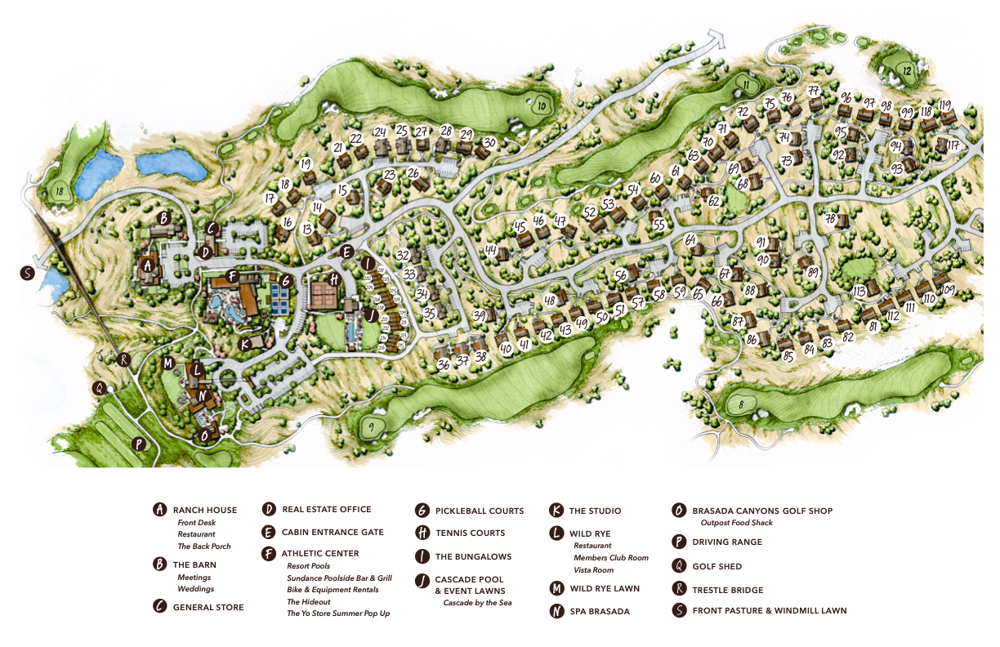

Getting here & staying awhile
Brasada Ranch Resort
16986 SW Brasada Ranch Rd, Powell Butte, OR 97753
We recommend staying at Brasada Ranch. We have a discount already provided using the link or calling this phone number.
For more info, call 1-877-771-4239 or use this link.

The nearest airport is Redmond Municipal Airport (RDM), about a 25-minute drive from Powell Butte. Portland International (PDX) is a larger alternative, roughly 3.5 hours away.
Rental cars are available at the airport, though not necessary if you're staying at Brasada Ranch.
Parking is available on-site at the venue.
24 minutes, 16 miles, and zero pirates.